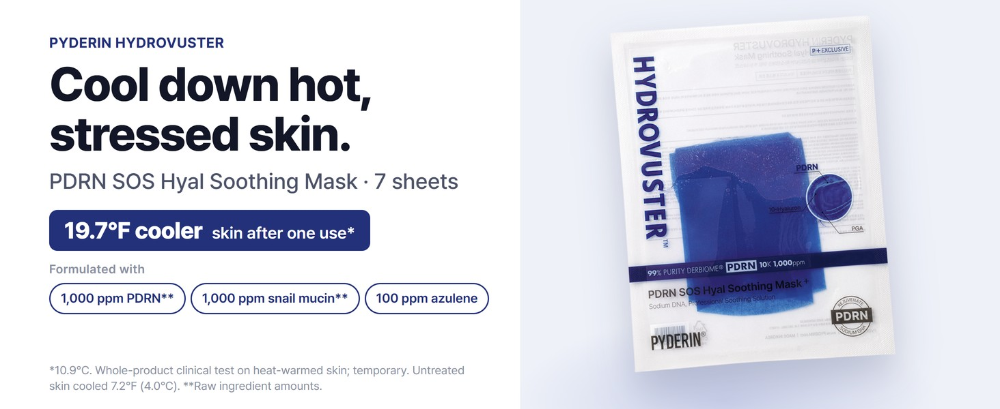
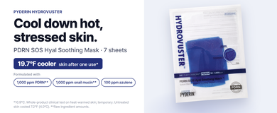
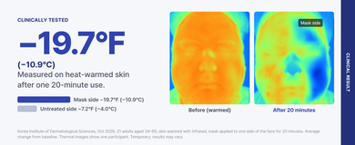
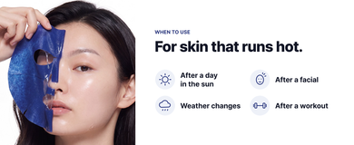
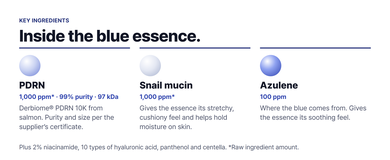
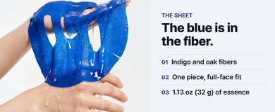
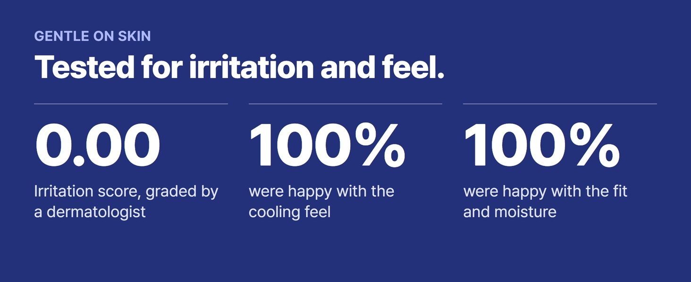
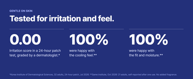
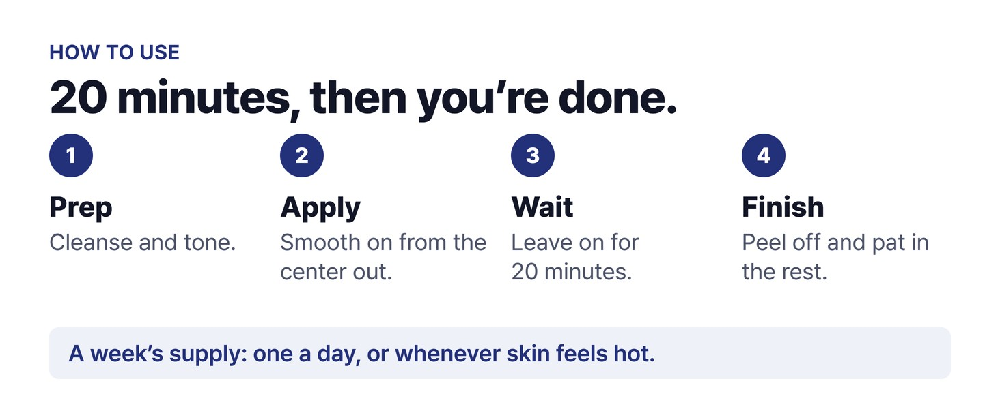
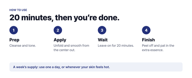

HYDROVUSTER PDRN SOS Hyal Soothing Mask — 미국 아마존 A+ 스토리보드
정지 화면 스토리보드입니다. 실제 사진·시험 자료로 만들었지만 최종 해상도와 아마존 칸 규격은 셀러센트럴 확인 후 맞춥니다. 판정은 "쓴다" 또는 "고침, 어디"로 주시면 됩니다.
1. 구성 원리 — 고객이 내려가며 묻는 순서대로
아마존 고객은 상품명·사진·글머리표에서 이미 "파란 시트마스크"인 걸 압니다. A+에서는 "정말 시원해져? → 언제 써? → 뭐가 들었어? → 시트는? → 자극은? → 어떻게 써?" 순서로 의심을 하나씩 풉니다. 경쟁 11개 상품 실측에서 본 표준 순서(첫 화면 → 성분 → 시험 → 시트 → 사용법)를 따르되, 우리만 가진 피부 온도 시험을 두 번째 칸으로 올렸습니다. 폰에서 두 번 넘기면 숫자가 보입니다.
| 칸 | 고객 질문 | 답 | 근거 |
|---|---|---|---|
| 01 첫 화면 | 이게 뭐야? | 달아오른 피부용 파란 진정 마스크 | 실제 파우치 |
| 02 증거 | 정말 시원해져? | 20분 후 −19.7°F (−10.9°C) | KIDS-BFJ037-BNK 열화상 |
| 03 상황 | 나한테 맞아? | 햇볕·관리 후·환절기·운동 후 | 국내 상세 SOS 시나리오 |
| 04 성분 | 뭐가 들었어? | PDRN 1,000 · 스네일 뮤신 1,000 · 아줄렌 100ppm (+나이아신아마이드 2%) | 수출용 전성분표·원료 증명 |
| 05 시트 | 왜 파래? 잘 붙어? | 청대·참나무 섬유, 일체형, 에센스 32 g | 원단 MSDS·포장 |
| 06 저자극·만족 | 자극은 없어? | 자극 0.00, 쿨링·밀착 만족 100% | KIDS-BFG001-BNK 영문·BFJ037 설문 |
| 07 사용법 | 어떻게 써? | 4단계, 20분, 일주일 7매 | 국내 상세·FAQ |
2. 7칸 화면
사진 출처 표시: 실물·시험 원본 AI 추정(국내 상세 재사용) 확인 필요 · 오른쪽 검은 칸 = 폰 폭(390px)에서 보이는 크기

역할
- 제품과 대상을 한 번에: "달아오른 피부"
- 숫자 칩 3개로 아래 칸 예고(온도·PDRN·나이아신아마이드)
- 흰 바탕 + 연한 파랑 면 = 리쥬란식 더마 톤
사진 · 근거
파우치 PSD 누끼(568×740) 10/27 문안 변경 전 파우치일 수 있음최종 제작엔 고해상 파우치 원본 필요. 칩의 ** = 원료 기준 농도 각주.

폰 폭
역할
- 경쟁사(셀퓨전씨 −4.5°C 표기)보다 큰 실측 숫자를 두 번째 칸에
- 안 바른 쪽 −4.0°C를 같이 보여줘 과장으로 읽히지 않게
- 세로 띠 "CLINICAL RESULT"로 시험 칸임을 구분
사진 · 근거
열화상 교부용 원본 FL_01평균값은 21명, 사진은 1명이라고 각주에 명시. 같은 사진 21명분 중 다른 사람으로 바꿀 수 있음(FL_05·09 후보 확인함).

폰 폭
역할
- 국내 SOS 시나리오 5개 → 미국용 4개
- "시술 직후"는 미국에서 의료 행위로 읽혀 "After a facial"로
사진 · 근거
반쯤 뗀 착용 컷국내 상세에서 자른 컷. 파우치 속 실제 시트와 색·섬유 질감은 눈으로 보기에 비슷하나, 실물 시트 단독 사진이 없어 정밀 대조는 못 함. "사용 전/후"처럼 보이지 않는 구도라 유지.

폰 폭

역할
- 국내엔 없던 나이아신아마이드 2%를 성분 3개에 포함
- 달팽이점액은 실제 100 ppm이라 주인공에서 빼고 "Also" 줄로
- PDRN은 원료명 Derbiome® PDRN 10K로만, ppm은 01칸 각주에
사진 · 근거
수출용 전성분표(5/22)구슬 그림은 임시. 제작 때 제형 텍스처 사진 또는 원료 이미지로 교체 검토.

폰 폭
역할
- 파란색 = 원단 섬유라는 한 줄만. Dr.Althea와 겹치는 "천연 색소" 이야기는 길게 안 함
- 비건·생분해 문구 없음(인증서 미확보)
사진 · 근거
손에 든 젖은 시트 원단 MSDS"40 gsm"은 국내 상세 표기지만 MSDS에 없어 제외.

폰 폭

역할
- 유일한 진한 남색 칸 = 페이지 리듬 전환
- 숫자 3개: 자극 0.00 / 쿨링감 만족 100% / 밀착·촉촉 만족 100%
사진 · 근거
KIDS-BFG001-BNK 영문(32명) BFJ037 설문(21명)"Dermatologist-tested" = 연구자 중 피부과 전문의(M.D.) 참여 확인. 향료 성분 없음.

폰 폭

역할
- 4단계 + "일주일 7매" 한 줄
- 12월 세럼·크림 리스팅 후 이 칸 아래에 라인 루틴/비교표 추가
사진 · 근거
국내 상세 사용법·FAQ제작 때 4단계 사진(국내 사용법 컷) 넣을지 판정에서 정해 주세요. 지금은 글만.

폰 폭
3. 자체 검수 결과
- 11/17 수정(사장님 "고쳐두고"): 온도 °F 먼저(−19.7°F/−10.9°C, 안 바른 쪽 −7.2°F/−4.0°C), 01 첫 화면 온도 결과를 성분 칩과 분리하고 각주에 "whole-product test"·안 바른 쪽 수치 추가, 04 구아이아줄렌 "redness" 문구 삭제(붉은기 시험 없음), 06 제목 교체, 용량 1.13 oz 병기, 대문자 꼬리표 자간 .14em→.07em·세로 띠 .2em→.1em·제목 자간 소폭 조정, 01 각주-칩 겹침·02 막대 글자 줄바꿈·05/07 한 단어 줄 해결. 원본은 _bak_20261117/, 재생성 _render_frames.py
- 11/17 미국 영어 검수(사장님 "뉴욕 언어 기준으로 맞춰서"): 01 제목 "Blue calm for heated skin" → "Cool down hot, stressed skin."(heated는 미국에서 화난·가열된으로 읽힘), 상품명 Heated → Hot, 성분 칩 "1,000 ppm Derbiome® PDRN 10K"·"2% Niacinamide"(숫자 앞: 10K와 1,000이 부딪혀 보이던 문제), 03 "After sun"→"After a day in the sun"(애프터선 제품명처럼 읽힘), "Long days in a face mask"→"After a workout"(코로나 시기 표현)
- 11/17 간격 수정(사장님 "공간이 꽉 차 있잖아"): 실측 02 캡션-각주 −4px → 57px(열화상 높이 442→384), 01 각주가 파우치 밑을 지나며 8px → 각주를 왼쪽 글 영역 안으로(칩-각주 약 51px), 03 아래 빈 공간 176px → 글 덩어리를 세로 가운데로(120px). 꼬리표 자간 .02em, 성적서 전체 보이게. 측정 _gap_check.py
- 11/17 영어 전체 미국식 정리·줄바꿈 검사(사장님 "뉴욕식으로 다 바꿔, 어색한 거 다 빼고"): 7칸·상품명·글머리표·썸네일·브랜드 스토리 문안 교체(글머리표 긴 대시 → 콜론, 글머리표 안 별표 삭제하고 Results are temporary를 본문에, "Seasonal shifts"→"Weather changes", "−19.7°F skin temperature"→"19.7°F cooler skin" 등). 줄 끝 한 단어 방지(text-wrap pretty·balance), 숫자-단위 붙임. 검사: _copy_check.py 0건, _gap_check.py 겹침 0. 이전본 _bak_20261117/*_before_copy.html
- 11/17 3대 성분(사장님 "스네일 뮤신 소구, 이 세 개가 메인 성분"): 국내 상세 기준 PDRN·스네일 뮤신·아줄렌으로 교체. 전성분표 대조 — PDRN 원료 0.1%(1,000ppm), 발효 달팽이점액여과물 원료 0.1%(1,000ppm, 실제 달팽이점액 0.01%), 소듐구아이아줄렌설포네이트 0.01%(100ppm). 영문 이름은 10/27 파우치 변경대로 Azulene. "카모마일 유래"는 원료 근거 없어 뺌. 나이아신아마이드 2%는 Plus 줄로. A1 후킹 3안 a1-hooks.html(판정 대기)
- 남은 아쉬운 점: 03·05 사진은 AI로 추정되는 국내 상세 컷(시트가 보이는 제품 컷), 01 파우치는 한글판, 폰 폭 본문 약 7px, 01 제목 "heated skin" 표현은 선택 대기
- 숫자: −10.9°C·−4.0°C·21명·34–65세·0.00·32명·100%·나이아신아마이드 2%·32 g·7매 — 원문 PDF/전성분표와 대조 일치
- 국내 상세 오류 미반영: 10,000 ppm, "유스 부스팅 세럼", 하이브로부스터, 의학적 보호막, 경쟁 비교표, 비건·생분해
- 한글 남은 사진 없음, 열화상 "mask side" 위치를 실제 식은 쪽으로 맞춤
- 폰 폭에서 본문(약 7px)과 각주는 읽기 어렵습니다. 경쟁사도 같은 구조지만, Premium A+에 모바일 전용 이미지 칸이 있는지 셀러센트럴에서 확인 후 폰용 600폭 판을 따로 만들 계획입니다.
- 01칸 파우치는 저해상도이고 10/27 문안 변경 전 디자인일 수 있습니다.
4. 제작 전 남은 것
- 고해상 파우치 원본 (변경 후 디자인) — 디자인팀 인쇄 파일
- 미국 영문 라벨(MoCRA) — NAS엔 기존 마스크 3종만 있고 하이드로부스터 것 없음. 미국 판매 전 필요
- 셀러센트럴 A+ 관리 화면에서 Premium 가능 여부·칸 규격·모바일 이미지 확인 (제가 직접 접속 가능)
- 비건·생분해 인증서 — 슬랙 연결 시 추가 확인
- 포장 각주 "20명/26.10.23" vs 보고서 21명 — 국내 담당자 확인
파일: storyboard-v1/frames.html(원본 레이아웃) · A01~A07.png(2배 해상도) · 사진 원본 assets/. 업로드·게시는 하지 않았습니다.